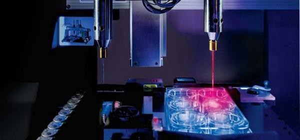
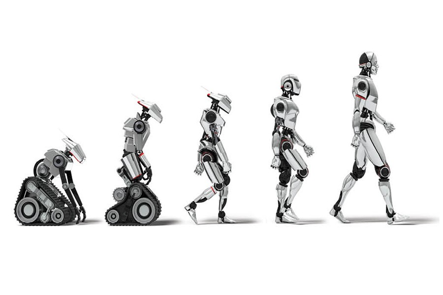

TechCrunch Robotics @ MIT
This week I had the pleasure of attending the Tech Crunch Robotics conference at MIT, here are the themes I took from the event. Hopefully this clears up some misconceptions about robots.
- Flying Robots
- Autonomous Vehicles
- Hardware = Software
- Robot as a Service
- Robotics is just getting started
Flying Robots
Robots can fly. No, not the bipedal robots we normally think of, but rather drones. Drones are popular because of consumer applications, but the truth is the future of drones is going to be big, and it is going to be industrial. Drones are already playing a big part in farming such as by monitoring crops’ level of nutritional intake.
Expect the roles of drones to expand into other industries such as mining, construction, and security. Imagine a drone that can mine and transport materials from a hard to reach mountain (extra points if that mountain is on a different planet), or a drone that can assist construction workers in building by placing items in otherwise dangerous locations, or a drone that can monitor banks 24/7 and provide facial recognition to ensure the bank is safe from known criminals.
Autonomous Vehicles
Self-driving cars have come a long way, but there are still serious questions that need to be solved. Namely: human negotiation.
When a driver wants to change lanes and makes eye contact with another to see if they have permission to change, this negotiation often happens without any words or hand gestures, but rather eye contact. How do self-driving cars account for this kind of human trait?
What difficulties will occur if the autonomous vehicles (AV) are different brands? If an iPhone can’t understand an Android it is not a problem for either user. However, if a Google Waymo car cannot understand a Tesla’s algorithm, this can cause serious problems for users of both cars.
How do car companies with different proprietary software collaborate enough so that the cars can communicate with each other, but not so much that they give their rival any secret sauce? Is there even a secret sauce when it comes to AV? Should car companies actually be allowed to have one or is it a safety concern if they don’t all follow the same algorithm?
The last problem is love. People love their car. Nobody loves their fridge. If having a car becomes nothing more than pushing a button, where does one establish a connection with the car? Nobody thinks twice about pushing a button on an elevator, cars might become the same way. Whether we can love and take pride in a completely autonomous vehicle is a question we as consumers will have to answer.
Hardware == Software
Software is eating up the world, including hardware. It is becoming increasingly difficult to separate the two. If an AV gets. into an accident, the data from that car crash will instantly be accessible to every car on the network. The cars can learn from one another.
What was once an issue with hardware, expensive costs to scale is becoming solved by software. Fixing an issue with a car no longer requires a new car, but rather a quick software update that can be performed while the car is charging.
Another key example is the rise of 3D printing. With it, the marginal cost of creating hardware at scale has been substantially reduced, allowing greater margins on hardware. Furthermore it is now easier than ever to use 3D printing software to create detailed and nuanced changes to variations of products, without having to make serious changes to an assembly line or compromise scale of the core product.
Robots as a Service
Robots are no longer a pretty face, they are becoming useful. Especially in niche, non-sexy areas such as mining and agriculture.
Apple picking is a notoriously boring and routine job that farmers (and their employees) hate. Thanks to advancements in Robotics this job can now be easily automated, which is not as easy as you would think. Apples come in different shapes, hardness, and grip, so creating a robot that can handle the breadth of apples in nature and grip them and store them appropriately is actually a complex problem. Thanks to these advancements, employees, and farmers are freed to do more interesting jobs.
Imagine the applications of this to a mining robot or a heavy lifting robot in construction. Which brings me to the last point …
Robotics is just getting started
If there is one thing I took from the MIT conference it is this: we are at the early days of what is possible in Robotics and the truly exciting applications have yet to come. Machine learning, AI, and 3D printing are creating an inflection point in what is possible using Robotics and we are going to see a rapid acceleration in the technology as it applies to helping businesses create value.
